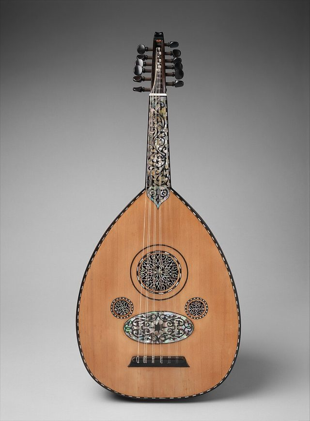

The oud is the pear-shaped, short-necked, fretless lute at the heart of Arab and Middle Eastern music. Its name comes from the Arabic al-ud, 'the wood', and the same word is the source of the European word lute through Moorish Spain. The instrument is most closely associated with Iraq, Syria and Egypt, though it is also central to music in Turkey, Iran, the Maghreb and the Gulf. Its likely ancestor, the Persian barbat, is a few centuries older.
How it is played
The player sits with the oud resting across the lap and plucks with a plectrum held in the right hand, traditionally a long piece of eagle feather. The strings are arranged in pairs, called courses, usually eleven strings in total with a single bass string, and tuned in fourths. Since there are no frets, the left hand slides along the bare neck to find each note exactly, including the quarter-tones that give maqam modes such as Rast and Bayati their character. The player improvises melodic lines over rhythmic cycles, and often opens a performance with a free-form taqsim.
Heritage note
The ninth-century Baghdad musician Ziryab is said to have taken the oud to Cordoba in Moorish Spain, where he added a fifth course of strings and helped found a school of music that shaped later Andalusian traditions. The philosophers al-Kindi and al-Farabi wrote about it, and the oud is sometimes called the king of instruments. In the twentieth century great players such as Munir Bashir of Iraq, Farid al-Atrash and Mohamed Abdel Wahab of Egypt and Riad al-Sunbati made it a solo instrument as well as an accompaniment for singers. Modern makers in Baghdad, Damascus and Cairo are renowned for carved sound holes and thin, bent-staved bowls.
Origins
Developed in the Middle East from earlier lutes; written sources from the 9th century onward describe its tuning and use in the courts of Baghdad and Cairo.
Available in Arcforge
Try a 90-second preview in your browser Google Play App Store
Sources
Related entries


Dombra
Kazakhstan · Musical instruments


Buzuq Long-Neck Lute
Lebanon +2 · Musical instrumentsPlay preview · in the String Music of the World app
More from Iraq

Al-Jazari water-clock contraptions
Iraq · Puzzles and mind games


Mudhif reed-arch house
Iraq · Crafts and making

Santur Hammer Strings
Iran +3 · Musical instruments